Oracle WebLogic Operator チュートリアル¶
WebLogic ドメインのデプロイ¶
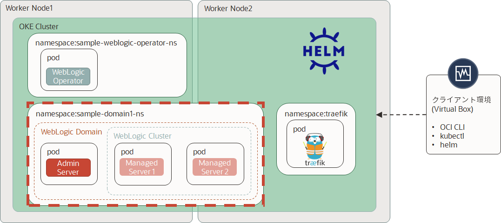
WebLogic ドメインを起動するKubernetesクラスタの準備¶
ドメインのネームスペースを作成します：
kubectl create namespace sample-domain1-ns
kubectl -n sample-domain1-ns create secret generic sample-domain1-weblogic-credentials \
--from-literal=username=weblogic \
--from-literal=password=welcome1
kubectl label secret sample-domain1-weblogic-credentials \
-n sample-domain1-ns \
weblogic.domainUID=sample-domain1 \
weblogic.domainName=sample-domain1
TraefikロードバランサーとWebLogicオペレーターの構成を更新する¶
ドメインネームスペース（WebLogicドメインがまだデプロイされていない）を取得したら、ドメインのデプロイ先に関するロードバランサーとオペレーターの構成を更新する必要があります。
ドメインhelmをインストールする前に、WebLogic OperatorのローカルGitリポジトリフォルダーにいることを確認してください。
cd /u01/content/weblogic-kubernetes-operator/
Podの起動に時間が掛かり、デフォルトだとタイムアウトになってしまうため、Weblogic Operatorの定義にオプションを追加します。 以下のコマンドからエディタ(vi)を起動します。
kubectl edit cm -n sample-weblogic-operator-ns weblogic-operator-cm
以下の場所にintrospectorJobActiveDeadlineSeconds: "600"を追加します。インデントに注意して追加してください。
apiVersion: v1
data:
internalOperatorCert: ~~~~~
~~~~~略~~~~~
~~~~~
introspectorJobActiveDeadlineSeconds: "600"
serviceaccount: sample-weblogic-operator-sa
targetNamespaces: sample-domain1-ns
オペレータを更新するには、次のhelm upgradeコマンドを実行します：
helm upgrade \
--reuse-values \
--set "domainNamespaces={sample-domain1-ns}" \
sample-weblogic-operator \
kubernetes/charts/weblogic-operator \
--recreate-pods
Traefikを更新するには、次のhelm upgradeコマンドを実行します：
helm upgrade \
--reuse-values \
--set "kubernetes.namespaces={traefik,sample-domain1-ns}" \
traefik-operator \
stable/traefik
WebLogicドメインPV用のFSSの作成¶
WebLogicドメインファイルを格納する外部ストレージを作成します。
OCIコンソールからファイル・ストレージをクリックし、ファイル・システムをクリックします。
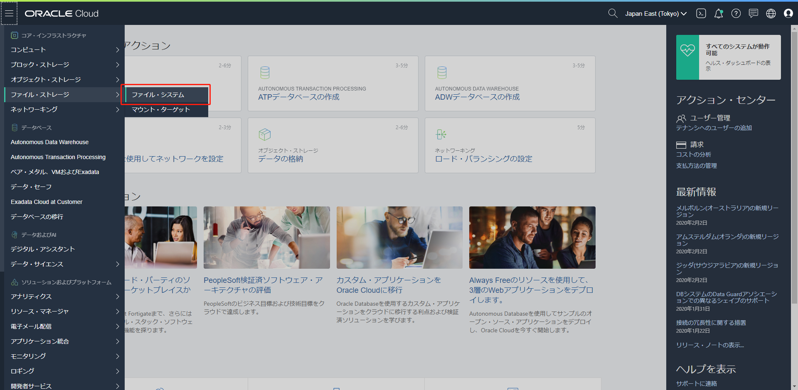
ファイル・システムの作成をクリックします。
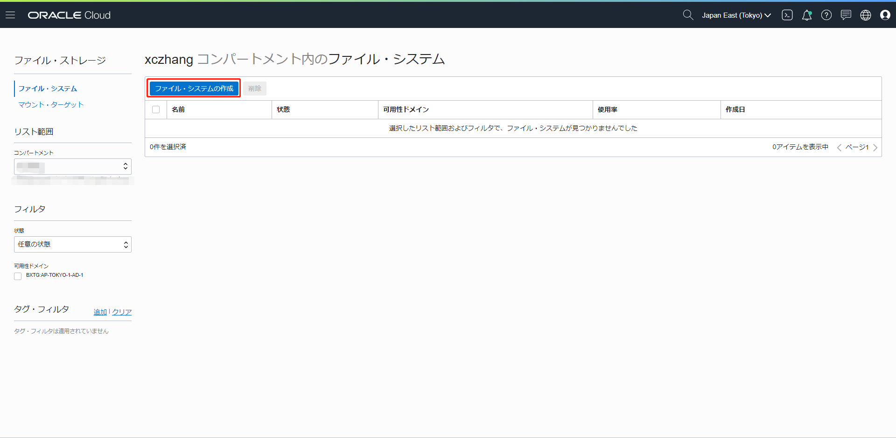
詳細の編集をクリックして、下記項目をOKEワーカーノードと同じ情報を設定してください。次、作成をクリックします。
- 仮想クラウド・ネットワーク
- サブネット
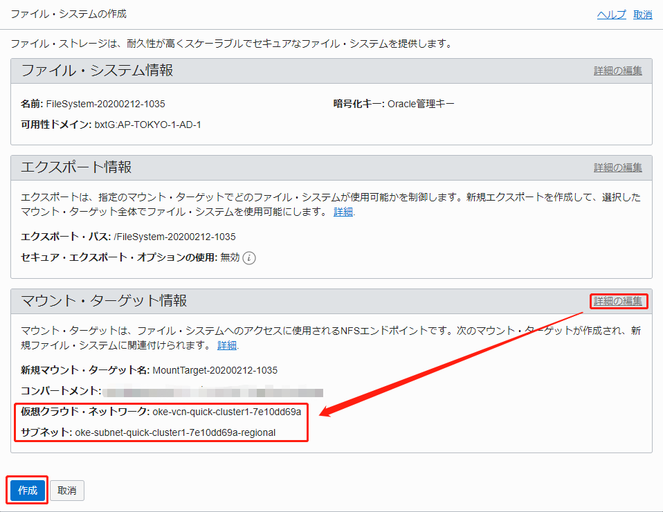
エクスポートのテーブルからマウント・コマンドをクリックします。
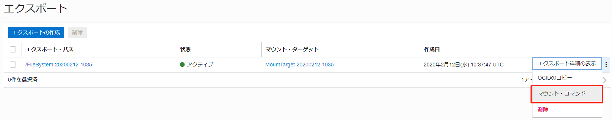
セキュリティ・ルールを設定する必要があるので、この説明通りに設定してください。FSSサーバーのIPとディレクトリをメモ帳に書き留めておいてください。たとえば、10.0.10.5とFileSystem-20200212-1035。
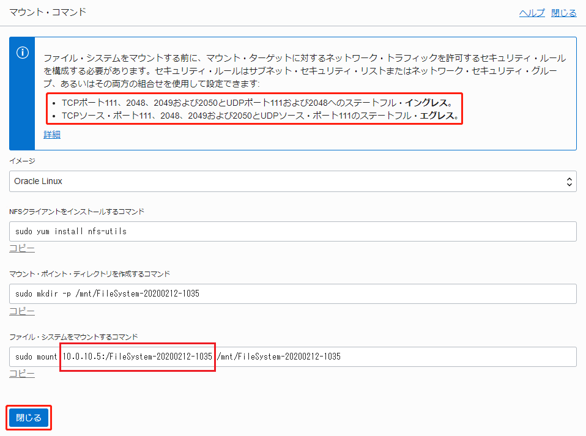
セキュリティルールを追加します。
イングレス・ルールには、赤枠で囲まれている情報と同じように登録してください。
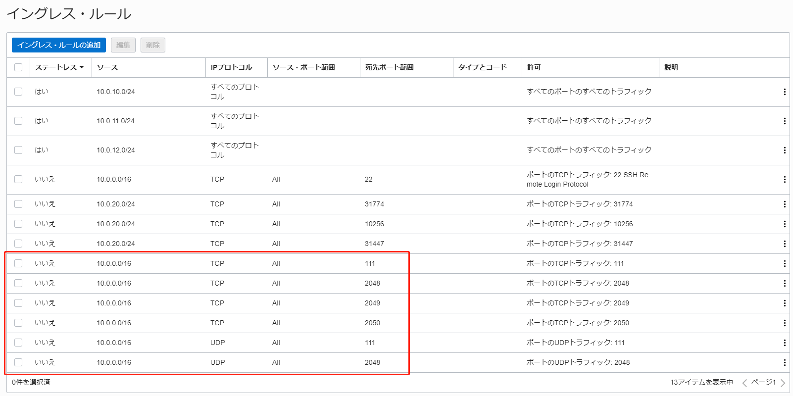
エグレス・ルールには、赤枠で囲まれている情報と同じように登録してください。
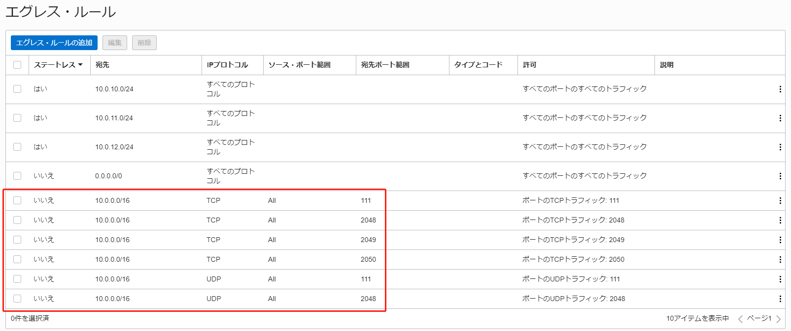
WebLogicドメインのPVとPVCを作成するために、FSSのマウント・ターゲットのOCIDが必要です。このOCIDをメモ帳に書き留めておいてください。
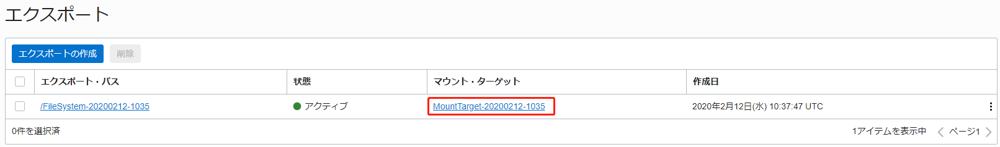
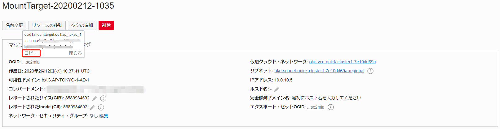
これでFSSの作成は完了しました。
WebLogicドメインのPVとPVCの作成¶
WebLogicドメインのPVとPVCを作成します。
PVとPVCを作成するスクリプトが格納されているディレクトリへ移動してください。
cd /u01/content/weblogic-kubernetes-operator
cd kubernetes/samples/scripts/create-weblogic-domain-pv-pvc
mntTargetId（※）を各自の情報へ修正して、StorageClassを作成してください。※:mntTargetIdはメモ帳に書き留めたFSSのマウント・ターゲットのOCID
cat <<EOF > oci-fss.yaml
kind: StorageClass
apiVersion: storage.k8s.io/v1beta1
metadata:
name: oci-storage-class
provisioner: oracle.com/oci-fss
parameters:
# Insert mount target from the FSS here
mntTargetId: ocid1.mounttarget.oc1.ap_tokyo_1.aaaaaaxxxxxxxxxxxxxxxxxxxxxxxxxxxxxxxxxxxxxxxxxxxxxxxxxx
EOF
kubectl apply -f oci-fss.yaml
作成したStorageClassを確認します。
kubectl get storageclass
以下のような出力が得られます：
※oci (default)はOCIのブロック・ストレージを使用して、ReadWriteOnceの仕組みであるため、複数OKEワーカーノードの利用にはふさわしくありません。
NAME PROVISIONER AGE
oci (default) oracle.com/oci 5d1h
oci-storage-class oracle.com/oci-fss 31s
Weblogic Kubernetes Operatorで用意するテンプレートを使用します。
バックアップを取ります。
cp pv-template.yaml pv-template.yaml.bak
cp pvc-template.yaml pvc-template.yaml.bak
PVのテンプレートを修正します。
vi pv-template.yaml
修正後のpv-template.yamlは：
# Copyright (c) 2018, 2019, Oracle Corporation and/or its affiliates. All rights reserved.
# Licensed under the Universal Permissive License v 1.0 as shown at https://oss.oracle.com/licenses/upl.
apiVersion: v1
kind: PersistentVolume
metadata:
name: %DOMAIN_UID%%SEPARATOR%%BASE_NAME%-pv
labels:
weblogic.resourceVersion: domain-v2
%DOMAIN_UID_LABEL_PREFIX%weblogic.domainUID: %DOMAIN_UID%
spec:
storageClassName: oci-storage-class
capacity:
storage: %SAMPLE_STORAGE_SIZE%
accessModes:
- ReadWriteMany
mountOptions:
- nosuid
# Valid values are Retain, Delete or Recycle
persistentVolumeReclaimPolicy: %SAMPLE_STORAGE_RECLAIM_POLICY%
%HOST_PATH_PREFIX%hostPath:
%NFS_PREFIX%nfs:
%NFS_PREFIX%server: %SAMPLE_STORAGE_NFS_SERVER%
path: "%SAMPLE_STORAGE_PATH%"
readOnly: false
PVCのテンプレートを修正します。
vi pvc-template.yaml
修正後のpvc-template.yamlは：
# Copyright (c) 2018, 2019, Oracle Corporation and/or its affiliates. All rights reserved.
# Licensed under the Universal Permissive License v 1.0 as shown at https://oss.oracle.com/licenses/upl.
kind: PersistentVolumeClaim
apiVersion: v1
metadata:
name: %DOMAIN_UID%%SEPARATOR%%BASE_NAME%-pvc
namespace: %NAMESPACE%
labels:
weblogic.resourceVersion: domain-v2
%DOMAIN_UID_LABEL_PREFIX%weblogic.domainUID: %DOMAIN_UID%
spec:
storageClassName: oci-storage-class
accessModes:
- ReadWriteMany
resources:
requests:
storage: %SAMPLE_STORAGE_SIZE%
volumeName: %DOMAIN_UID%%SEPARATOR%%BASE_NAME%-pv
PVとPVC作成スクリプト用のInputファイルを作成します。
cp create-pv-pvc-inputs.yaml my-pv-pvc-inputs.yaml
my-pv-pvc-inputs.yamlを修正します。
vi my-pv-pvc-inputs.yaml
weblogicDomainStorageNFSServer（※1）とweblogicDomainStoragePath（※2）を各自の情報へ修正してください。
※1:weblogicDomainStorageNFSServerは、メモ帳に書き留めたFSSサーバーのIP
※2:weblogicDomainStoragePathは、メモ帳に書き留めたFSSサーバーのディレクトリ
修正後のmy-pv-pvc-inputs.yamlは：
# Copyright (c) 2018, 2019, Oracle Corporation and/or its affiliates. All rights reserved.
# Licensed under the Universal Permissive License v 1.0 as shown at https://oss.oracle.com/licenses/upl.
# The version of this inputs file. Do not modify.
version: create-weblogic-sample-domain-pv-pvc-inputs-v1
# The base name of the pv and pvc
baseName: weblogic-sample
# Unique ID identifying a domain.
# If left empty, the generated pv can be shared by multiple domains
# This ID must not contain an underscope ("_"), and must be lowercase and unique across all domains in a Kubernetes cluster.
domainUID: sample-domain1
# Name of the namespace for the persistent volume claim
namespace: sample-domain1-ns
# Persistent volume type for the persistent storage.
# The value must be 'HOST_PATH' or 'NFS'.
# If using 'NFS', weblogicDomainStorageNFSServer must be specified.
weblogicDomainStorageType: NFS
# The server name or ip address of the NFS server to use for the persistent storage.
# The following line must be uncomment and customized if weblogicDomainStorateType is NFS:
weblogicDomainStorageNFSServer: 10.0.10.5
# Physical path of the persistent storage.
# When weblogicDomainStorageType is set to HOST_PATH, this value should be set the to path to the
# domain storage on the Kubernetes host.
# When weblogicDomainStorageType is set to NFS, then weblogicDomainStorageNFSServer should be set
# to the IP address or name of the DNS server, and this value should be set to the exported path
# on that server.
# Note that the path where the domain is mounted in the WebLogic containers is not affected by this
# setting, that is determined when you create your domain.
# The following line must be uncomment and customized:
weblogicDomainStoragePath: /FileSystem-20200212-1035
# Reclaim policy of the persistent storage
# The valid values are: 'Retain', 'Delete', and 'Recycle'
weblogicDomainStorageReclaimPolicy: Retain
# Total storage allocated to the persistent storage.
weblogicDomainStorageSize: 10Gi
PVとPVC作成スクリプトを実行します。
./create-pv-pvc.sh -i my-pv-pvc-inputs.yaml -o . -e
作成したPVとPVCを確認します。
kubectl get pv,pvc -n sample-domain1-ns
STATUSがBoundになっていることを確認できます。
NAME CAPACITY ACCESS MODES RECLAIM POLICY STATUS CLAIM STORAGECLASS REASON AGE
persistentvolume/sample-domain1-weblogic-sample-pv 10Gi RWX Retain Bound sample-domain1-ns/sample-domain1-weblogic-sample-pvc oci-storage-class 2m49s
NAME STATUS VOLUME CAPACITY ACCESS MODES STORAGECLASS AGE
persistentvolumeclaim/sample-domain1-weblogic-sample-pvc Bound sample-domain1-weblogic-sample-pv 10Gi RWX oci-storage-class 2m43s
これでPVとPVCの作成は完了しました。
KubernetesにWebLogicドメインをデプロイする¶
WebLogicドメインをデプロイします。
PVを使用するWebLogicドメイン作成スクリプトが格納されているディレクトリへ移動してください。
cd /u01/content/weblogic-kubernetes-operator
cd kubernetes/samples/scripts/create-weblogic-domain/domain-home-on-pv
docker hubにある一般のイメージを使用する場合、認証なしでご使用いただけますが、WebLogicのイメージはdocker hub storeにあるため、事前に使用条件を承諾する必要です。
docker hub storeからイメージを取得できるように、secretを作成します。
kubectl create secret docker-registry dockersecret \
-n sample-domain1-ns \
--docker-server=index.docker.io/v1/ \
--docker-username=YOUR_USERNAME \
--docker-password=YOUR_PASSWORD \
--docker-email=YOUR_EMAIL
WebLogicドメインをデプロイするには、オペレーターがWebLogicドメインを適切に起動するために必要なパラメーターを含むドメインリソース定義を作成する必要があります。
my-domain-inputs.yamlを作成します。
cp create-domain-inputs.yaml my-domain-inputs.yaml
my-domain-inputs.yamlを修正します。
vi my-domain-inputs.yaml
修正後のmy-domain-inputs.yamlは：
# Copyright (c) 2018, 2019, Oracle Corporation and/or its affiliates. All rights reserved.
# Licensed under the Universal Permissive License v 1.0 as shown at https://oss.oracle.com/licenses/upl.
# The version of this inputs file. Do not modify.
version: create-weblogic-sample-domain-inputs-v1
# Port number for admin server
adminPort: 7001
# Name of the Admin Server
adminServerName: admin-server
# Unique ID identifying a domain.
# This ID must not contain an underscope ("_"), and must be lowercase and unique across all domains in a Kubernetes cluster.
domainUID: sample-domain1
# Home of the WebLogic domain
# If not specified, the value is derived from the domainUID as /shared/domains/<domainUID>
domainHome: /shared/domains/sample-domain1
# Determines which WebLogic Servers the operator will start up
# Legal values are "NEVER", "IF_NEEDED", or "ADMIN_ONLY"
serverStartPolicy: IF_NEEDED
# Cluster name
clusterName: cluster-1
# Number of managed servers to generate for the domain
configuredManagedServerCount: 5
# Number of managed servers to initially start for the domain
initialManagedServerReplicas: 2
# Base string used to generate managed server names
managedServerNameBase: managed-server
# Port number for each managed server
managedServerPort: 8001
# WebLogic Server Docker image.
# The operator requires WebLogic Server 12.2.1.3.0 with patch 29135930 applied.
# The WebLogic Docker image, `weblogic:12.2.1.3`, has all the necessary patches applied.
# Refer to [WebLogic Docker images](../../../../../site/weblogic-docker-images.md) for details on how
# to obtain or create the image.
image: store/oracle/weblogic:12.2.1.4
# Image pull policy
# Legal values are "IfNotPresent", "Always", or "Never"
imagePullPolicy: IfNotPresent
# Name of the Kubernetes secret to access the Docker Store to pull the WebLogic Server Docker image
# The presence of the secret will be validated when this parameter is enabled.
imagePullSecretName: dockersecret
# Boolean indicating if production mode is enabled for the domain
productionModeEnabled: true
# Name of the Kubernetes secret for the Admin Server's username and password
# The name must be lowercase.
# If not specified, the value is derived from the domainUID as <domainUID>-weblogic-credentials
weblogicCredentialsSecretName: sample-domain1-weblogic-credentials
# Whether to include server .out to the pod's stdout.
# The default is true.
includeServerOutInPodLog: true
# The in-pod location for domain log, server logs, server out, and node manager log files
# If not specified, the value is derived from the domainUID as /shared/logs/<domainUID>
logHome: /shared/logs/sample-domain1
# An (optional) in-pod location for data storage of default and custom file stores.
# If not specified or the value is either not set or empty (e.g. dataHome: "") then the
# data storage directories are determined from the WebLogic domain home configuration.
#dataHome:
# Port for the T3Channel of the NetworkAccessPoint
t3ChannelPort: 30012
# Public address for T3Channel of the NetworkAccessPoint. This value should be set to the
# kubernetes server address, which you can get by running "kubectl cluster-info". If this
# value is not set to that address, WLST will not be able to connect from outside the
# kubernetes cluster.
#t3PublicAddress:
# Boolean to indicate if the channel should be exposed as a service
exposeAdminT3Channel: false
# NodePort to expose for the admin server
adminNodePort: 30701
# Boolean to indicate if the adminNodePort will be exposed
exposeAdminNodePort: false
# Name of the domain namespace
namespace: sample-domain1-ns
#Java Option for WebLogic Server
javaOptions: -Dweblogic.StdoutDebugEnabled=false
# Name of the persistent volume claim
# If not specified, the value is derived from the domainUID as <domainUID>-weblogic-sample-pvc
persistentVolumeClaimName: sample-domain1-weblogic-sample-pvc
# Mount path of the domain persistent volume.
domainPVMountPath: /shared
# Mount path where the create domain scripts are located inside a pod
#
# The `create-domain.sh` script creates a Kubernetes job to run the script (specified in the
# `createDomainScriptName` property) in a Kubernetes pod to create a WebLogic home. Files
# in the `createDomainFilesDir` directory are mounted to this location in the pod, so that
# a Kubernetes pod can use the scripts and supporting files to create a domain home.
createDomainScriptsMountPath: /u01/weblogic
# Script that the create domain script uses to create a WebLogic domain
#
# The `create-domain.sh` script creates a Kubernetes job to run this script to create a
# domain home. The script is located in the in-pod directory that is specified in the
# `createDomainScriptsMountPath` property.
#
# If you need to provide your own scripts to create the domain home, instead of using the
# built-it scripts, you must use this property to set the name of the script that you want
# the create domain job to run.
createDomainScriptName: create-domain-job.sh
# Directory on the host machine to locate all the files to create a WebLogic domain
# It contains the script that is specified in the `createDomainScriptName` property.
#
# By default, this directory is set to the relative path `wlst`, and the create script will
# use the built-in WLST offline scripts in the `wlst` directory to create the WebLogic domain.
# It can also be set to the relative path `wdt`, and then the built-in WDT scripts will be
# used instead.
#
# An absolute path is also supported to point to an arbitrary directory in the file system.
#
# The built-in scripts can be replaced by the user-provided scripts or model files as long
# as those files are in the specified directory. Files in this directory are put into a
# Kubernetes config map, which in turn is mounted to the `createDomainScriptsMountPath`,
# so that the Kubernetes pod can use the scripts and supporting files to create a domain home.
createDomainFilesDir: wlst
# Uncomment and edit value(s) below to specify the maximum amount of
# compute resources allowed, and minimum amount of compute resources
# required for each server pod.
# These are optional.
# Please refer to the kubernetes documentation on Managing Compute
# Resources for Containers for details.
#
# serverPodMemoryRequest: "64Mi"
# serverPodCpuRequest: "250m"
# serverPodMemoryLimit: "1Gi"
# serverPodCpuLimit: "1000m"
# Istio service mesh support is experimental.
# istioEnabled specifies whether or not it is deployed under Istio.
istioEnabled: false
# Istio service mesh support is experimental.
# istioReadinessPort specifies the WebLogic NAP port for use by the readiness probe
istioReadinessPort: 8888
create-domain-job-template.yamlのバックアップを取ります。
cp create-domain-job-template.yaml create-domain-job-template.yaml.bak
create-domain-job-template.yamlを修正します。
vi create-domain-job-template.yaml
修正後のcreate-domain-job-template.yamlは：
# Copyright (c) 2018, 2019, Oracle Corporation and/or its affiliates. All rights reserved.
# Licensed under the Universal Permissive License v 1.0 as shown at https://oss.oracle.com/licenses/upl.
apiVersion: batch/v1
kind: Job
metadata:
name: %DOMAIN_UID%-create-weblogic-sample-domain-job
namespace: %NAMESPACE%
spec:
template:
metadata:
annotations:
sidecar.istio.io/inject: "false"
labels:
weblogic.resourceVersion: domain-v2
weblogic.domainUID: %DOMAIN_UID%
weblogic.domainName: %DOMAIN_NAME%
app: %DOMAIN_UID%-create-weblogic-sample-domain-job
spec:
restartPolicy: Never
initContainers:
- name: fix-pvc-owner
image: %WEBLOGIC_IMAGE%
command: ["sh", "-c", "chown 1000:1000 %DOMAIN_ROOT_DIR%/. && find %DOMAIN_ROOT_DIR%/. -maxdepth 1 ! -name '.snapshot' ! -name '.' -print0 | xargs -r -0 chown -R 1000:1000"]
volumeMounts:
- name: weblogic-sample-domain-storage-volume
mountPath: %DOMAIN_ROOT_DIR%
securityContext:
runAsUser: 0
runAsGroup: 0
containers:
- name: create-weblogic-sample-domain-job
image: %WEBLOGIC_IMAGE%
imagePullPolicy: %WEBLOGIC_IMAGE_PULL_POLICY%
ports:
- containerPort: 7001
volumeMounts:
- mountPath: %CREATE_DOMAIN_SCRIPT_DIR%
name: create-weblogic-sample-domain-job-cm-volume
- mountPath: %DOMAIN_ROOT_DIR%
name: weblogic-sample-domain-storage-volume
- mountPath: /weblogic-operator/secrets
name: weblogic-credentials-volume
command: ["/bin/sh"]
args: ["%CREATE_DOMAIN_SCRIPT_DIR%/%CREATE_DOMAIN_SCRIPT%"]
env:
- name: DOMAIN_UID
value: "%DOMAIN_UID%"
- name: DOMAIN_NAME
value: "%DOMAIN_NAME%"
- name: ADMIN_SERVER_NAME
value: "%ADMIN_SERVER_NAME%"
- name: ADMIN_SERVER_NAME_SVC
value: "%ADMIN_SERVER_NAME_SVC%"
- name: ADMIN_PORT
value: "%ADMIN_PORT%"
- name: CLUSTER_NAME
value: "%CLUSTER_NAME%"
- name: CLUSTER_TYPE
value: "DYNAMIC"
- name: T3_CHANNEL_PORT
value: "%T3_CHANNEL_PORT%"
- name: T3_PUBLIC_ADDRESS
value: "%T3_PUBLIC_ADDRESS%"
- name: MANAGED_SERVER_NAME_BASE_SVC
value: "%MANAGED_SERVER_NAME_BASE_SVC%"
- name: MANAGED_SERVER_NAME_BASE
value: "%MANAGED_SERVER_NAME_BASE%"
- name: CONFIGURED_MANAGED_SERVER_COUNT
value: "%CONFIGURED_MANAGED_SERVER_COUNT%"
- name: MANAGED_SERVER_PORT
value: "%MANAGED_SERVER_PORT%"
- name: PRODUCTION_MODE_ENABLED
value: "%PRODUCTION_MODE_ENABLED%"
- name: CREATE_DOMAIN_SCRIPT_DIR
value: "%CREATE_DOMAIN_SCRIPT_DIR%"
- name: DOMAIN_ROOT_DIR
value: "%DOMAIN_ROOT_DIR%"
- name: DOMAIN_HOME_DIR
value: "%DOMAIN_HOME%"
- name: DOMAIN_LOGS_DIR
value: "%DOMAIN_ROOT_DIR%/logs/%DOMAIN_UID%"
- name: ISTIO_ENABLED
value: "%ISTIO_ENABLED%"
- name: ISTIO_READINESS_PORT
value: "%ISTIO_READINESS_PORT%"
- name: WDT_VERSION
value: %WDT_VERSION%
volumes:
- name: create-weblogic-sample-domain-job-cm-volume
configMap:
name: %DOMAIN_UID%-create-weblogic-sample-domain-job-cm
- name: weblogic-sample-domain-storage-volume
persistentVolumeClaim:
claimName: %DOMAIN_PVC_NAME%
- name: weblogic-credentials-volume
secret:
secretName: %WEBLOGIC_CREDENTIALS_SECRET_NAME%
%WEBLOGIC_IMAGE_PULL_SECRET_PREFIX%imagePullSecrets:
%WEBLOGIC_IMAGE_PULL_SECRET_PREFIX%- name: %WEBLOGIC_IMAGE_PULL_SECRET_NAME%
WebLogicドメインを作成します。
./create-domain.sh -i my-domain-inputs.yaml -o . -e
最初に実行するドメイン作成ジョブを確認します：
kubectl get po -n sample-domain1-ns
以下のような結果が得られます：
NAME READY STATUS RESTARTS AGE
sample-domain1-create-weblogic-sample-domain-job-djk84 0/1 Running 0 52s
ドメインのネームスペース(sample-domain1-ns)のポッドを定期的に確認すると、すぐにサーバーが起動されていることがわかります：
kubectl get po -n sample-domain1-ns -o wide
NAME READY STATUS RESTARTS AGE IP NODE NOMINATED NODE READINESS GATES
sample-domain1-admin-server 1/1 Running 0 6m 10.244.3.10 10.0.10.3 <none> <none>
sample-domain1-create-weblogic-sample-domain-job-djk84 0/1 Completed 0 7m55s 10.244.3.8 10.0.10.3 <none> <none>
sample-domain1-managed-server1 1/1 Running 0 4m14s 10.244.3.12 10.0.10.3 <none> <none>
sample-domain1-managed-server2 1/1 Running 0 4m14s 10.244.3.11 10.0.10.3 <none> <none>
上記の結果と同様の3つの実行中のポッドを確認する必要があります。実行中のポッドがすべて表示されない場合は、しばらく待った後に定期的に確認してください。コンピュートインスタンスのシェイプによっては、ドメイン全体の展開に2〜3分かかることがあります。
WebLogicにデプロイされたアプリケーションまたは管理コンソールにアクセスするには、TraefikIngressを構成する必要があります。 OCIロードバランサーは、前のステップのTraefikインストール中に既に割り当てられています。
外部トラフィックをTraefikを介してドメインクラスタアドレスまたは管理サーバーのコンソールにルーティングするパスルーティングを構成するのが最も簡単な方法です。
次のIngressリソース定義を実行します：
cat << EOF | kubectl apply -f -
apiVersion: extensions/v1beta1
kind: Ingress
metadata:
name: traefik-pathrouting-1
namespace: sample-domain1-ns
annotations:
kubernetes.io/ingress.class: traefik
spec:
rules:
- host:
http:
paths:
- path: /
backend:
serviceName: sample-domain1-cluster-cluster-1
servicePort: 8001
- path: /console
backend:
serviceName: sample-domain1-admin-server
servicePort: 7001
EOF
2つのバックエンドとネームスペース、サービスネーム、サービスポートの定義に注意してください。最初のバックエンドはルートコンテキストパスでアプリケーションに到達するドメインクラスタサービスです。 2つ目は管理コンソール用の別のサービスです。
Ingressが作成されたら、以下の形式で管理コンソールのURLを作成します：
http://EXTERNAL-IP/console
EXTERNAL-IPは、Traefikのインストール中に表示されます。メモを忘れた場合は、次のコマンドを実行して取得できます：
kubectl describe svc traefik-operator --namespace traefik | grep Ingress | awk '{print $3}'
以下のような出力が得られます：
xxx.xxx.xxx.xxx
管理コンソールのURLをブラウザーで開きます：
管理者のユーザー資格情報（weblogic / welcome1）を入力し、Loginをクリックします。
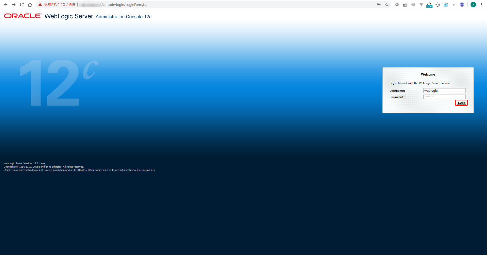
デモWebアプリケーションのデプロイ¶
デモWebアプリケーションをデプロイします。
GitからデモWebアプリケーションを取得します。
cd /u01/content
git clone https://github.com/oracle-japan/weblogic-operator-handson.git
Weblogic管理コンソール画面でLock & Editをクリックします。
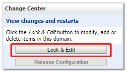
Deploymentsをクリックします。
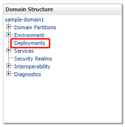
Installをクリックします。
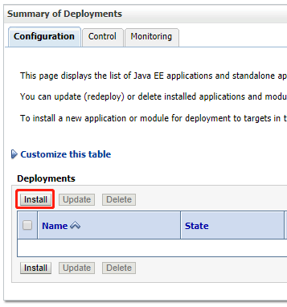
Upload your file(s)をクリックします。
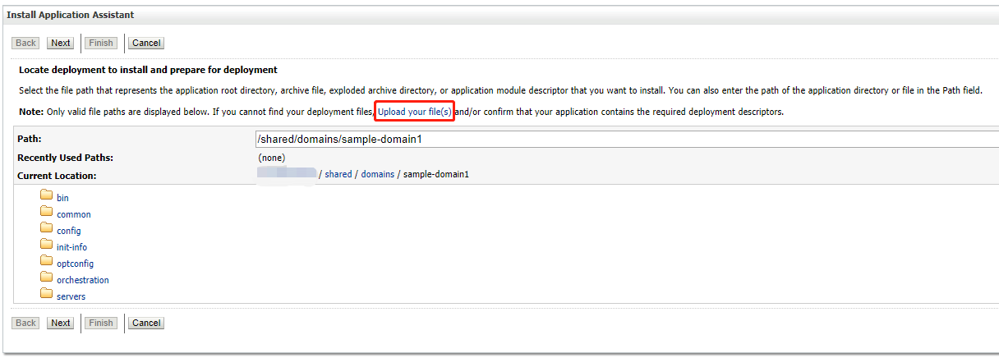
ファイルを選択をクリックします。
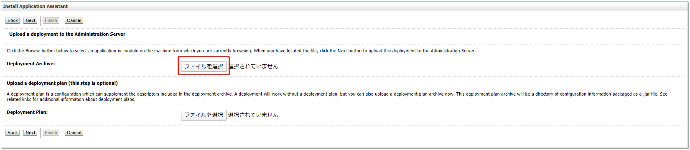
/u01/content/weblogic-operator-handson/application/1.0/opdemo.warを選択して、Nextをクリックします。
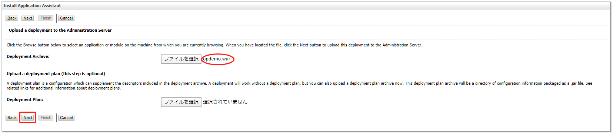
デフォルトのままで、Nextをクリックします。
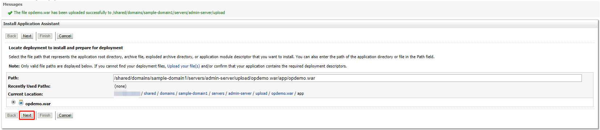
デフォルトのままで、Nextをクリックします。
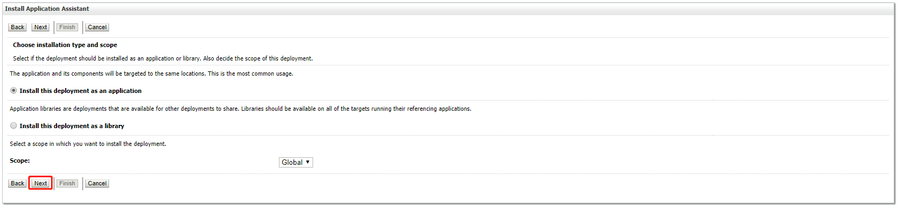
cluster-1のチェックをオンにして、Nextをクリックします。
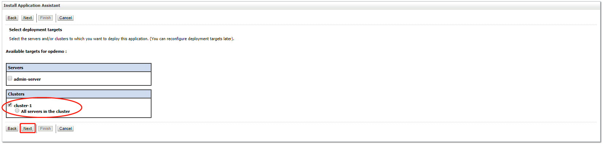
Finishをクリックします。
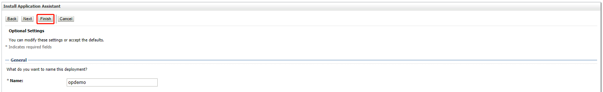
Activate Changesをクリックします。
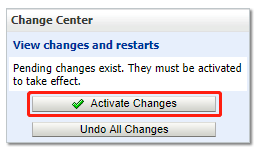
Controllをクリックします。
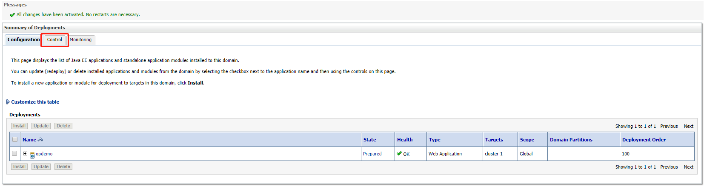
opdemoのチェックをオンにして、Servicing all requestsをクリックします。
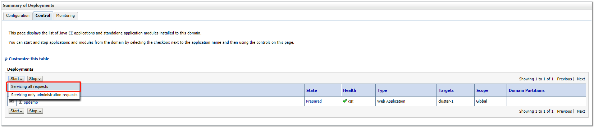
Yesをクリックします。
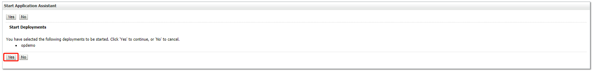
StateがPreparedからActiveになることを確認できます。
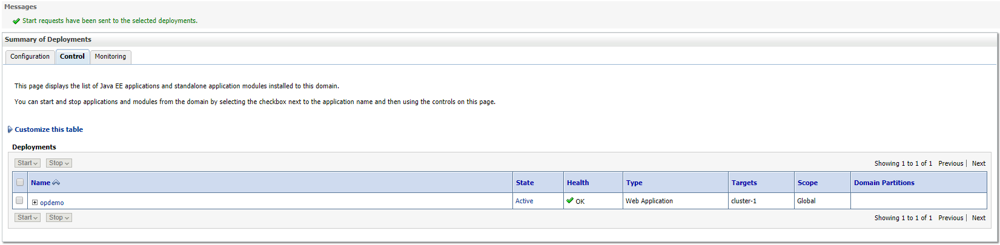
デモアプリケーションのURLは以下の通りです：
http://EXTERNAL-IP/opdemo/
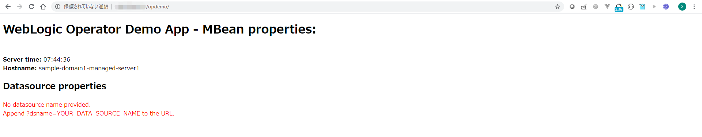
ページを更新し、ホスト名が変更されたことを確認します。画面上に要求に応答している管理対象サーバーの名前が表示されます。また、2つの管理対象サーバー間の負荷分散が確認できます。
続いて、WebLogic Clusterのスケーリングに進んでください。